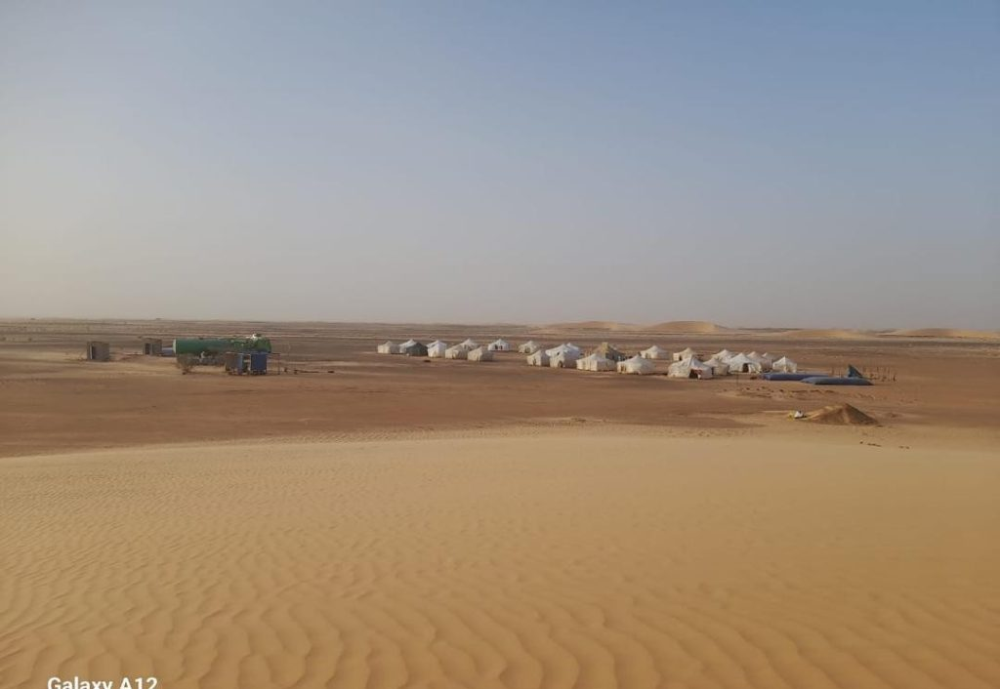

Projet TIJIRIT I
Couverture complete d'une campagne de prospection aurifere.
MML a assure la couverture de la campagne de prospection aurifere dans la zone de Tijirit, pour la periode du 7 novembre au 14 fevrier 2026, avec le materiel et les ressources necessaires a l'exploration miniere.
- Camp de vie et catering.
- Bulldozer D8, porte-char, citernes eau et gasoil.
- Voitures tout terrain et groupes electrogenes.
- Connexion internet et support HSE.